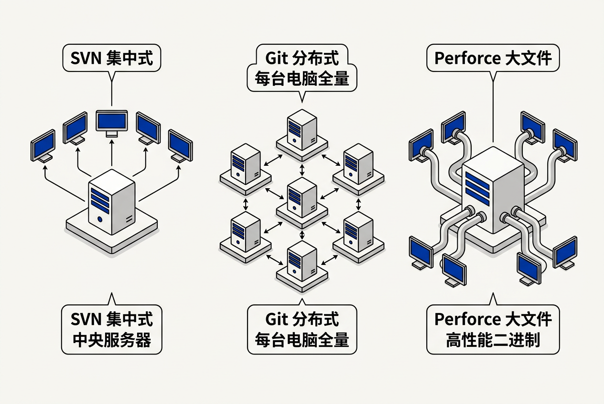
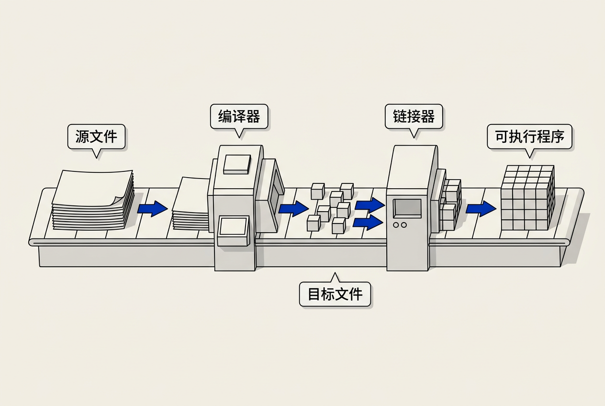
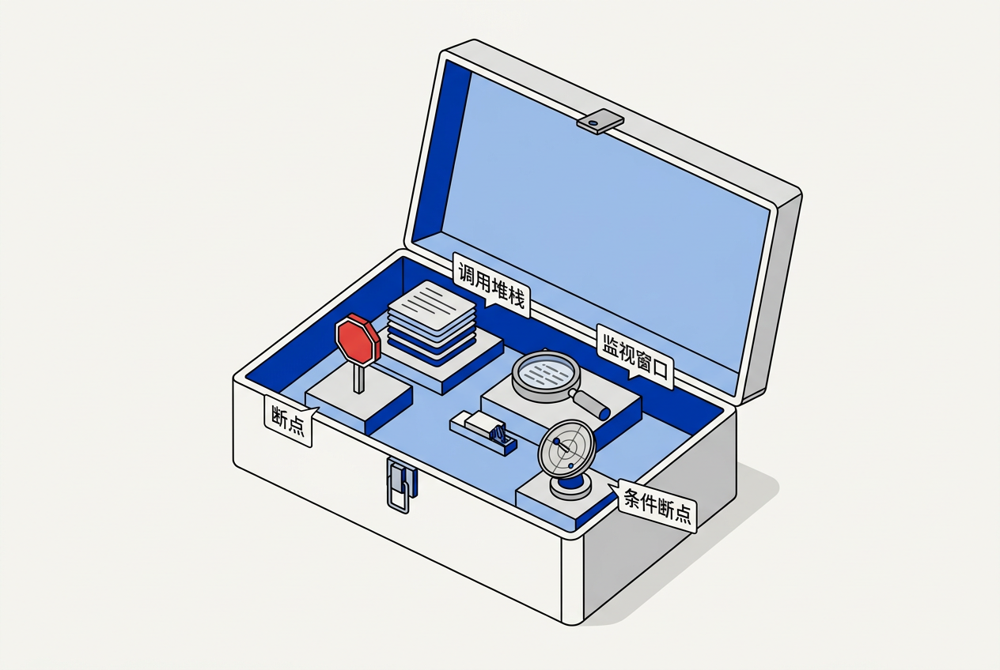

第2章：工具的技艺 — 零基础讲义
讲义说明
本讲义基于 Jason Gregory 所著《Game Engine Architecture Volume I》第4版第2章（Tools of the Trade, p.59-93），逐节翻译推导。
本版插画由 ImageGen + Guizang 材质插画标准流程生成。
学习目标
- 理解版本控制的核心作用及 SVN/Git/Perforce 的差异
- 掌握编译器、链接器、IDE 的三者关系
- 理解 Debug/Release/Profile 三种构建配置的区别
- 学会使用调试器的核心功能（断点、调用栈、监视窗口）
- 了解 Profiler 和内存泄漏检测工具的工作原理
2.1 版本控制系统
生活类比： 版本控制就像写论文时保存的 "论文_v1.doc"、"论文_v2_导师修改.doc"、"论文_final.doc"、"论文_final_真的最终版.doc"——但是由机器自动管理，不会搞混，随时可以回到任意历史版本，还能自动合并多人的修改。

2.1.1 版本控制的核心概念
2.1.1.1 六个基本操作
| 操作 | 含义 | 类比 |
|---|---|---|
| Checkout / Clone | 将仓库的代码复制到本地 | 从图书馆借书 |
| Update / Pull | 获取别人的最新修改 | 刷新看到同事改了什么 |
| Commit / Push | 提交你的修改到仓库 | 提交你的章节到共用文档 |
| Revert | 放弃本地修改，回到仓库版本 | "我不改了，用回原来的" |
| Merge | 合并两个人的并行修改 | 两人各写半章，合到同一个文件 |
| Branch / Tag | 分出一条独立的开发线（分支）/ 标记一个发布版本 | 实验性改动不影响主线 |
2.1.1.2 为什么版本控制不是"备份"
备份只保存最终状态。版本控制保存的是演进历史——谁在什么时间因为什么原因改了哪一行。这让你可以：问到"这个 bug 是哪次提交引入的？"——在版本控制的世界里，答案是精确到 commit ID 和行号的。
2.1.2 三大版本控制系统
2.1.2.1 SVN（Subversion）— 集中式
模型： 一个中央服务器，所有人从它拉取和提交。客户端只有当前版本。
// SVN 工作流
svn checkout http://server/project // 获取最新版
// ... 修改代码 ...
svn commit -m "修复了碰撞bug" // 提交到中央服务器，所有人立刻能看到
svn update // 获取同事的最新提交优点： 简单直观，适合非程序员（设计师、美术）。缺点： 服务器挂了所有人停工。大文件（PSD/Blend）处理慢。
2.1.2.2 Git — 分布式
模型： 每个人的机器都是一个完整仓库（包含全部历史）。修改先在本地提交，再推送到远程。
// Git 工作流（两步提交）
git add file.cpp // 暂存修改
git commit -m "修复了碰撞bug" // 提交到本地仓库
git push origin main // 推送到远程（GitHub/GitLab），别人才能看到
git pull // 拉取并合并远程的最新修改
// 核心差异化操作
git branch feature-ai // 创建分支（隔离开发）
git checkout feature-ai // 切换到分支
// ... 在分支上开发 ...
git checkout main // 切回主线
git merge feature-ai // 合并回主线优点： 离线可工作、分支极其轻量、合并强大。缺点： 学习曲线陡，对大文件不友好（LFS 是补救方案）。
2.1.2.3 Perforce（P4）— 中央集中式 + 大文件优化
模型： 类似 SVN，但针对二进制大文件深度优化。游戏行业的标准选择（因为游戏项目动辄上百 GB 的资产）。
// Perforce 的工作流
p4 sync // 同步最新版
p4 edit file.cpp // 标记文件为"正在编辑"（相当于"我要改这个"）
// ... 改代码 ...
p4 submit -d "修复碰撞bug" // 提交关键差异：Perforce 的 "checkout 锁定"——修改二进制文件前先通知服务器"我要改这个"，防止两个人同时修改同一个二进制文件产生无法合并的冲突（PSD/Blend 文件无法像代码一样 merge）。
2.1.2.4 三种系统对比总结
| 特性 | SVN | Git | Perforce |
|---|---|---|---|
| 架构 | 集中式 | 分布式 | 集中式（+代理缓存） |
| 代码管理 | ★★★ | ★★★★★ | ★★★ |
| 大文件管理 | ★★ | ★★（需Git LFS） | ★★★★★ |
| 学习曲线 | ★（简单） | ★★★★（陡） | ★★（适中） |
| 游戏行业采用 | 很少 | 独立团队/Unity项目 | 几乎所有3A工作室 |
游戏项目的特点：代码可能只有几 GB，但资产（纹理、模型、音频、动画）动辄 100GB+。Git 的分布式模型意味着每个开发者本地都有一份完整历史——想像一下 clone 一个 500GB 的仓库。Perforce 的集中式模型只同步当前版本（不拖全历史），且对二进制文件的"锁定→修改→提交"流程天然防冲突。
2.1.3 合并冲突的解决
2.1.3-1 冲突的产生
两个人同时修改了同一个文件的同一行——版本控制无法自动决定保留谁的。
// 冲突标记
<<<<<<< HEAD // 你的修改
player.speed = 5.0f;
======= // 别人的修改
player.speed = 7.0f;
>>>>>>> main
// 解决方案：手动选择保留 5.0 还是 7.0，删除标记2.1.3.2 减少冲突的最佳实践
- 频繁 Pull/Update（不要攒一周不改），避免偏离主线太远
- 小步提交（一次提交只做一件事），大改动容易冲突
- 频繁沟通（"我要重构碰撞系统了，大家先别动Collider.cpp"）
2.2 编译器、链接器与 IDE

2.2.1 编译的三阶段
2.2.1.1 阶段1：预处理（Preprocessor）
处理以 # 开头的指令——展开 #include（把 .h 文件内容原样复制过来）、替换 #define 宏、条件编译 #ifdef。
// 预处理前
#include "Player.h"
#define MAX_HP 100
#ifdef DEBUG_MODE
Log("Debug mode");
#endif
// 预处理后（简化）
// ... Player.h 的全部内容插入到这里 ...
int hp = 100; // MAX_HP 被直接替换
Log("Debug mode"); // DEBUG_MODE 定义了，所以保留2.2.1.2 阶段2：编译（Compilation）
将预处理后的 C++ 代码翻译成目标文件（.obj / .o）——每个 .cpp 文件独立编译成一个 .obj 文件。目标文件包含：机器指令（CPU 能执行的二进制码）和符号表（"这个文件定义了什么" + "这个文件引用了什么"）。
2.2.1.3 阶段3：链接（Linking）
将多个 .obj 文件 + .lib 库文件合并成一个可执行文件（.exe）或动态库（.dll / .so）。链接器的工作是"解析符号引用"——A.obj 里调用了 Player::Move()，B.obj 里定义了 Player::Move()，链接器把它们连到一起。
// 编译和链接的关系
// 五个 .cpp 文件 → 五个 .obj 文件 → 链接成一个 .exe
main.cpp → main.obj ┐
Player.cpp → Player.obj ├──→ linker.exe → Game.exe
Enemy.cpp → Enemy.obj │
Physics.cpp → Physics.obj ┘
Core.lib（预编译的库）──────┘
// 常见链接错误
// LNK2019: unresolved external symbol "void Player::Move()"
// 原因：某个 .obj 调用了 Player::Move()，但没有任何 .obj/.lib 定义它2.2.2 IDE 集成开发环境
2.2.2.1 IDE 的本质
IDE（Integrated Development Environment，集成开发环境）= 代码编辑器 + 编译器/链接器前端 + 调试器前端 + 项目管理器 + 代码补全/智能提示。你不用手动在命令行敲 cl.exe 和 link.exe——IDE 的"按 F5 运行"替你完成所有这些。
2.2.2.2 游戏行业常用 IDE
| IDE | 平台 | 特点 |
|---|---|---|
| Visual Studio | Windows | 游戏行业标准（Xbox/PC开发） |
| Visual Studio Code | 全平台 | 轻量编辑器，Unity/Web开发 |
| Rider | 全平台 | JetBrains 出品，Unity/C# 首选 |
| Xcode | macOS | iOS/macOS 游戏必备 |
| CLion | 全平台 | 跨平台 C++ 开发 |
2.2.3 静态库 vs 动态库
2.2.3.1 两种库的区别
| 静态库（.lib / .a） | 动态库（.dll / .so） | |
|---|---|---|
| 链接时机 | 编译时嵌入 .exe | 运行时加载 |
| .exe 体积 | 大（包含库的代码） | 小（只包含引用） |
| 更新方式 | 重新编译整个游戏 | 替换 .dll 文件即可 |
| 加载速度 | 快（已在 .exe 内） | 稍慢（加载时找 .dll） |
| 典型用途 | 引擎核心模块 | 第三方插件、平台SDK |
因为引擎和游戏是独立迭代的。如果引擎每次更新都需要游戏团队重新编译+链接整个 .exe，效率极低（链接时间可能几十分钟）。动态库让引擎升级只需替换 .dll——游戏团队不用动一行代码。但代价是加载时多一步"找 .dll"的开销。
2.3 构建配置
2.3.1 三种标准配置
2.3.1.1 Debug（调试）配置
| 特性 | Debug 配置 |
|---|---|
| 优化 | 关闭（-O0），每行代码独立翻译 |
| 调试符号 | 完整 PDB（断点/单步/监视） |
| 运行时检查 | 开启（栈保护/内存初始化/断言） |
| 速度 | 慢（可能是 Release 的 5-20 倍） |
| 用途 | 日常开发、打断点调试 |
2.3.1.2 Release（发布）配置
| 特性 | Release 配置 |
|---|---|
| 优化 | 全开（-O2/-O3），编译器疯狂重排/内联/向量化 |
| 调试符号 | 剥离（或不生成 PDB） |
| 运行时检查 | 关闭（极端速度） |
| 速度 | 快（目标性能） |
| 用途 | 发布给玩家的版本 |
2.3.1.3 Profile（剖析）配置 = Debug 的调试能力 + Release 的性能
最优化的同时保留部分调试信息。用来做性能分析——在尽可能接近 Release 的性能下，Profiler 仍然能显示函数名和行号。
| 特性 | Profile 配置 |
|---|---|
| 优化 | 全开（和 Release 一样） |
| 调试符号 | 保留（函数名+行号，但变量可能被优化掉了） |
| 用途 | 性能分析（"引擎跑了多少帧？哪部分最慢？"） |
2.3.2 Debug vs Release 的 Bug 差异
2.3.2.1 为什么 Debug 正常运行但 Release 崩溃？
这是新手最头疼的问题。三个常见原因：
- 未初始化变量： Debug 模式下编译器自动将变量初始化为 0 或 0xCC；Release 下变量是随机的脏数据。Debug 的"仁慈"掩盖了 bug。
- 内存布局不同： Debug 模式编译器不优化，内存中变量的排列顺序和间距和代码里一样；Release 可能重新排列甚至合并——如果你依赖了"两个变量在内存中挨着"的隐含假设，Release 下就会崩。
- 寄存器 vs 栈： Release 优化下，变量可能被放进寄存器中（甚至被优化掉），调试器里看不到它们。
- CMake： 跨平台构建配置（生成 Visual Studio 解决方案 / Makefile）
- Premake： 游戏行业常用，Lua 编写
- MSBuild： Visual Studio 的构建引擎
- FASTBuild： 分布式编译（多台机器一起编译，大幅加速）
- Incredibuild： 商业分布式编译方案，3A 游戏工作室标配
- 学习目标
- 学习目标
- 2.1 版本控制系统
- 2.1.1 版本控制的核心概念
- 2.1.1.1 六个基本操作
- 2.1.1.2 为什么版本控制不是"备份"
- 2.1.2 三大版本控制系统
- 2.1.2.1 SVN（Subversion）— 集中式
- 2.1.2.2 Git — 分布式
- 2.1.2.3 Perforce（P4）— 中央集中式 + 大文件优化
- 2.1.2.4 三种系统对比总结
- 2.1.3 合并冲突的解决
- 2.1.3-1 冲突的产生
- 2.1.3.2 减少冲突的最佳实践
- 2.2 编译器、链接器与 IDE
- 2.2.1 编译的三阶段
- 2.2.1.1 阶段1：预处理（Preprocessor）
- 2.2.1.2 阶段2：编译（Compilation）
- 2.2.1.3 阶段3：链接（Linking）
- 2.2.2 IDE 集成开发环境
- 2.2.2.1 IDE 的本质
- 2.2.2.2 游戏行业常用 IDE
- 2.2.3 静态库 vs 动态库
- 2.2.3.1 两种库的区别
- 2.3 构建配置
- 2.3.1 三种标准配置
- 2.3.1.1 Debug（调试）配置
- 2.3.1.2 Release（发布）配置
- 2.3.1.3 Profile（剖析）配置 = Debug 的调试能力 + Release 的性能
- 2.3.2 Debug vs Release 的 Bug 差异
- 2.3.2.1 为什么 Debug 正常运行但 Release 崩溃？
- 2.3.3 编译器优化详解
- 2.3.3.1 五种常见优化技术
- 2.4 调试器
- 2.4.1 调试器的四大核心功能
- 2.4.1.1 断点（Breakpoint）
- 2.4.1.2 条件断点（Conditional Breakpoint）
- 2.4.1.3 调用堆栈（Call Stack）
- 2.4.1.4 监视窗口（Watch Window）
- 2.4.2 调试器的高级功能
- 2.4.2.1 内存窗口（Memory Window）
- 2.4.2.2 数据断点（Data Breakpoint）
- 2.4.2.3 反汇编视图（Disassembly）
- 2.4.3 常见调试陷阱
- 2.4.3.1 Heisenbug（观测改变行为）
- 2.4.3.2 野指针（Dangling Pointer）与悬空引用
- 2.5 性能分析工具
- 2.5.1 Profiler 的类型
- 2.5.1.1 采样 Profiler（Statistical Profiler）
- 2.5.1.2 插桩 Profiler（Instrumenting Profiler）
- 2.5.2 游戏行业常用 Profiler
- 2.5.2.1 行业标准工具列表
- 2.5.2.2 微架构计数器
- 2.6 内存泄漏检测
- 2.6.1 内存泄漏的定义
- 2.6.1.1 一个简单定义
- 2.6.1.2 为什么尤其对游戏致命？
- 2.6.2 内存泄漏检测工具
- 2.6.2.1 常用工具对比
- 2.6.2.2 CRT 调试堆的使用
- 2.7 其他工具
- 2.7.1 差异/合并工具（Diff/Merge）
- 2.7.1.1 用途
- 2.7.2 构建系统
- 2.7.2.1 从 Makefile 到现代构建系统
- 2.7.3 持续集成（CI/CD）
- 2.7.3.1 游戏开发的 CI 流程
- 本章核心洞察
- 📝 课后练习题（含答案）
- 🤖 qAagent 零基础问答区
// 经典案例：未初始化变量
// Debug：value 碰巧是 0 → 不出问题
// Release：value 是某个随机脏数据 → 出问题
int value; // 未初始化！
if (value > 100) { // Debug: 0>100=false，跳过
DoSomething(); // Release: 随机数>100可能是true，执行了不该执行的
}2.3.3 编译器优化详解
2.3.3.1 五种常见优化技术
| 优化 | 原始代码 | 优化后效果 |
|---|---|---|
| 函数内联（Inlining） | int GetHP() { return hp; } | 调用处直接替换为 hp 的访问（省去 call/return 开销） |
| 常量折叠 | int x = 3 * 60 * 1000; | 编译时就算出180000，不放在运行时算 |
| 死代码消除 | if(false) { ... } | 直接删除，不出现在二进制中 |
| 循环展开 | for(i=0;i<4;i++) sum+=a[i]; | 展开为4条直接加法，免除循环增量与判断 |
| SIMD向量化 | 4次 float 加法 | 1条 SSE 指令完成 4 次加法 |
三板斧：① 二分法注释代码——注释掉一半看还崩溃吗，逐步缩小范围。② 开 Profile 配置（有优化但有符号）然后用 Profiler 看崩溃前的调用路径。③ 日志大法——在可疑代码路径上插 LOG 语句（是唯一在 Release 下还能正常工作且不干扰优化的调试手段）。
2.4 调试器

2.4.1 调试器的四大核心功能
2.4.1.1 断点（Breakpoint）
程序运行到指定代码行自动暂停。最常用的调试方式。
void Player::TakeDamage(int amount) {
hp -= amount;
if (hp <= 0)
Die(); // ← 在这里打断点：想看看 hp 到底是多少
}2.4.1.2 条件断点（Conditional Breakpoint）
只在满足条件时才暂停——避免在循环里手动跳过 99 次。
// 在 for 循环内打断点，条件设为 i == 500
// 只在第500次迭代时暂停，不用手动按F5 499次
for (int i = 0; i < 10000; i++) {
ProcessEntity(i); // ← 条件断点: i == 500
}2.4.1.3 调用堆栈（Call Stack）
显示"调用链"——A 调用了 B，B 调用了 C，C 调用了当前位置。这对理解"我是怎么到达这里的"至关重要。
// 在 Physics::ResolveCollision() 里打断点，查看调用栈
// 输出：
// Physics::ResolveCollision() line 234 ← 当前暂停位置
// Physics::NarrowPhase() line 156
// Physics::Step() line 89
// GameLoop::Update() line 45
// WinMain() line 23
// → 一眼看出是在 Update→Step→NarrowPhase→ResolveCollision 的路径中2.4.1.4 监视窗口（Watch Window）
暂停时查看和修改变量的值——"这个变量现在是多少？改成另一个值试试？"
2.4.2 调试器的高级功能
2.4.2.1 内存窗口（Memory Window）
以十六进制字节方式查看原始内存。当你怀疑"内存对齐出错了"或者"缓冲区溢出了"时——直接看内存。
2.4.2.2 数据断点（Data Breakpoint）
当某个内存地址的值被修改时触发断点——这是追踪"谁改了我的变量"的神器。不用在几百个可能修改它的地方打断点，直接告诉调试器"有人改了地址 0x12345678 就停"。
2.4.2.3 反汇编视图（Disassembly）
查看 C++ 代码对应的汇编指令。不是日常使用功能，但在 Debug 与 Release 不一致时——看看编译器到底生成了什么汇编。
2.4.3 常见调试陷阱
2.4.3.1 Heisenbug（观测改变行为）
调试器本身改变了程序的行为——"开着调试器就不崩，不开就崩"。通常由时序问题（调试器让程序变慢，掩盖了竞态条件）或未初始化内存的差异导致。
2.4.3.2 野指针（Dangling Pointer）与悬空引用
指向已释放内存的指针——数值可能看起来"合理"，但实际使用的内存已被回收。这是 C++ 中最难调试的问题之一。
// 野指针的经典场景
Enemy* enemy = new Enemy();
delete enemy; // 释放
// enemy 现在是一个"野指针"——指向已释放的内存
// 如果不设为 nullptr，后续代码可能错误地使用它
// enemy->Attack(); ← 未定义行为！可能崩可能不崩，完全看运气2.5 性能分析工具
2.5.1 Profiler 的类型
2.5.1.1 采样 Profiler（Statistical Profiler）
以固定频率（如每毫秒）中断程序，记录当前正在执行的函数。不需要修改代码。统计"哪个函数被中断的次数最多" = 占用 CPU 最多的函数。缺点：只能看到"函数A 占比 30%"，不能看到"函数A 的一次调用花了 2ms"。
2.5.1.2 插桩 Profiler（Instrumenting Profiler）
在每个函数的入口和出口插入计时代码。每个函数调用都精确计时——"这个函数被调用了 1000 次，平均每次 0.3ms"。优点：精确；缺点：需要插桩（改代码或编译参数），插桩本身有开销。
2.5.2 游戏行业常用 Profiler
2.5.2.1 行业标准工具列表
| 工具 | 类型 | 平台 | 特点 |
|---|---|---|---|
| Unreal Insights | 插桩 | 全平台 | UE 内置，帧级时间线 |
| Tracy | 插桩 | 全平台 | 开源、轻量、实时 |
| Superluminal | 采样+插桩 | Windows/Xbox | 收费、极其好用 |
| PIX | GPU+CPU | Windows/Xbox | 微软官方，GPU 调试王者 |
| RenderDoc | GPU | 全平台 | 开源、DX11/12/Vulkan |
| VTune | 采样+硬件计数器 | Windows/Linux | Intel，微架构分析 |
2.5.2.2 微架构计数器
CPU 内置的硬件计数器，可以精确告诉你：缓存未命中（Cache Miss）的次数、分支预测失败的次数、指令执行的周期数。这些是比"函数耗时"更底层的性能指标——"这个函数慢不是因为它运算多，而是因为 cache miss 太多"。优化的第一步永远是先测量，不是先猜测。
2.6 内存泄漏检测
2.6.1 内存泄漏的定义
2.6.1.1 一个简单定义
内存泄漏 = 分配了内存，但没有任何指针指向它，因此再也无法释放。内存一直占用但没法用，直至进程结束后被操作系统回收。
2.6.1.2 为什么尤其对游戏致命？
普通应用启动→做操作→退出，内存泄漏在退出后就清零了。但游戏可能连续运行数小时，每帧泄漏 1KB → 一小时泄漏 216MB → 内存耗尽 → 崩溃。
2.6.2 内存泄漏检测工具
2.6.2.1 常用工具对比
| 工具 | 平台 | 原理 | 开销 |
|---|---|---|---|
| Visual CRT 调试堆 | Windows | 替换 new/delete，退出时报告未释放的分配 | 低 |
| Valgrind | Linux | 虚拟 CPU 执行每条指令，检测泄漏+越界+未初始化 | 10-50x |
| AddressSanitizer | 全平台 | 编译时插桩，在每次内存操作旁插入检查代码 | ~2x |
| Custom Allocator | 全平台 | 自己的分配器记录每次分配的调用栈，退出时 dump | 低（可配置） |
2.6.2.2 CRT 调试堆的使用
// Visual Studio CRT 调试堆的使用
#define _CRTDBG_MAP_ALLOC
#include
int main() {
_CrtSetDbgFlag(_CRTDBG_ALLOC_MEM_DF | _CRTDBG_LEAK_CHECK_DF);
// ... 游戏代码 ...
// 程序退出时自动打印所有未释放的分配：
// Detected memory leaks!
// Dumping objects ->
// {42} normal block at 0x00AB1234, 128 bytes long.
// Data: < > CD CD CD CD ...
// Object dump complete.
} 因为 Valgrind 检测的不是"泄漏"（这只占内存 bug 的一小部分），而是更危险的越界访问和 Use-After-Free——这些操作在发布环境中产生随机行为（有时崩溃有时不崩溃），极难调试。Valgrind 用一条指令一条指令的方式模拟执行，能够精确到字节级别。即使让程序慢了 50 倍，能发现一个隐藏了三周的随机崩溃也是值得的。不过现代更多用 ASan 替代 Valgrind——开销更低速度更快。
2.7 其他工具
2.7.1 差异/合并工具（Diff/Merge）
2.7.1.1 用途
比较两个版本的文件之间的差异。解决合并冲突时必不可少。常用工具：WinMerge、Beyond Compare、VS 内置 Diff。
2.7.2 构建系统
2.7.2.1 从 Makefile 到现代构建系统
构建系统自动化"编译→链接→打包→部署"的整个流程。常用方案：
2.7.3 持续集成（CI/CD）
2.7.3.1 游戏开发的 CI 流程
每次有人提交代码，CI 系统自动：拉取最新代码 → 全量编译 → 运行测试 → 生成构建 → 上传到内部共享。如果编译失败或测试不通过，立即在 Slack/钉钉 通知提交者。常用 CI 工具：Jenkins、GitHub Actions、TeamCity。
本章核心洞察
Gregory 用一整章的篇幅教读者"怎么用工具"是有深意的——熟练使用开发工具区分了"知道怎么写代码"和"能高效做项目"。版本控制不止是备份——它是团队协作的社交协议。调试器不止是断点——它是时间暂停器。Profiler 不止是看时间——它是 X 光机，透视程序内部运行的每一微秒。
三条工具准则：
1. 先选 VCS，再写第一行代码： 游戏项目不要在没有版本控制的情况下开始
2. 三种构建配置缺一不可： Debug 开发 → Profile 分析 → Release 发布
3. 工具不是"会了就够了"——是"越用越快"： 每天用键盘快捷键、用命令行替代鼠标点菜单，积累下来每天省 30 分钟
📝 课后练习题（含答案）
① 历史追踪： 备份只有最新状态，VCS 能回溯任意历史版本并知道谁改了什么。② 并行协作： VCS 能自动合并多人修改，备份需要手动对比。③ 提交消息： 每次提交有说明——"改了碰撞系统的优化"，让团队知道改动目的。④ 分支隔离： VCS 可以用分支做实验性改动而不影响主线。
Git： 代码文件（.cpp/.h/.cs）——分布式的全历史副本适合程序员独立开发、分支测试。Perforce： 大型二进制文件（.psd/.blend/.fbx/.wav）——集中式不拖全历史、checkout 锁定防冲突。游戏项目通常代码用 Git（或 Perforce 同时管代码），资产统一用 Perforce。
预处理： 展开 #include——把头文件内容复制过来；替换 #define 宏；条件编译 #ifdef。输入：.cpp；输出：预处理后的 .i 文件。编译： 翻译成机器指令。每个 .cpp 独立生成一个 .obj。输入：.i；输出：.obj。链接： 把许多 .obj + .lib 合并为一个 .exe。解决了符号引用——Player.obj 调用了 Enemy::Attack()，但 Enemy::Attack() 在 Enemy.obj 中定义，链接器将它们连起来。
| 优化 | 符号 | 用途 | |
|---|---|---|---|
| Debug | 关（-O0） | 全 | 日常开发、打断点调试 |
| Release | 开（-O2） | 无 | 发布给玩家 |
| Profile | 开（-O2） | 有 | 性能分析（近似Release但有函数名行号） |
① 未初始化变量： Debug 自动初始化为 0/0xCC（碰巧不出错），Release 是随机脏数据。② 内存布局差异： Debug 下变量布局 = 代码声明顺序；Release 优化可能重排，依赖"紧挨着"的假设会崩。③ 编译器优化策略： 把变量放寄存器里，调试器看不到，影响调试。④ 时序差异： Release 跑得快，竞态条件/死锁在 Debug 中因为慢而被掩盖。
① 断点： 基础调试——"我想在这个位置暂停看看当前状态"。② 条件断点： 循环中——"只在这个变量的值等于 X 时暂停"。③ 调用堆栈： 理解"我怎么到达这里的"——"明明不应该调用到这里的，谁调的我？"④ 监视窗口： 实时查看和修改变量——"hp 是多少？改成 100 试试？"
野指针 = 指向已释放内存的指针。之所以难调试：① 指针值看起来"合法"（不是 nullptr），无法通过判空发现。② 被释放的内存可能还没被重新分配，所以数据还"看起来正确"→ 让错误延迟暴露。③ 崩溃位置往往不是 bug 位置——错误数据被写入释放的内存，污染了后来分配在那里的某块内存，最终在一个完全不相关的代码崩溃。
静态库在编译时嵌入 .exe，运行时不依赖外部文件，但 .exe 体积大。动态库运行时加载，更新只需替换 .dll，但加载有额外开销。游戏引擎通常把引擎本身和平台 SDK做成动态库——引擎团队更新引擎，游戏团队不用重新链接 .exe。而核心数学库等基础模块做成静态库——不需要独立更新，因小且高频访问。
🤖 qAagent 零基础问答区
必装清单： ① Visual Studio 2022 Community（免费）—— C++ IDE + 编译器 + 调试器。② Git（命令行或 GitHub Desktop）—— 版本控制。③ 随便一个文本编辑器（Notepad++ 或 VS Code）。④ 至少一个 Diff 工具（WinMerge 免费）。这四样够你完成本讲义中所有练习。
可以，但没必要。有一些团队确实同时用——代码用 Git + Git LFS，资产用 Perforce + Helix Core。但这对团队技能要求很高（每个人都得会两套工具）。实际中：大 3A 统一用 Perforce（简化运维），独立团队用 Git（免费+GitHub 生态）。GitHub 的 LFS（Large File Storage）正在缩小差距，但处理 100GB+ 资产仍不及 Perforce。
链接器错误。某个 .cpp 里声明了（调用了）一个函数，但没有在任何 .obj 或 .lib 中找到它的定义。常见原因：① 忘记把那个 .cpp 文件加入项目编译。② 忘记链接需要的 .lib 文件（在项目设置中）。③ 函数声明和定义的签名不匹配——声明是 void Foo(int) 但定义是 void Foo(float)。(int) 和 (float) 在链接器看来是完全不同的符号。
两个程序员各自改了同一个文件的同一行。Git/Perforce 无法自动判断"谁的版本是对的"，于是停止自动合并，留下冲突标记。解决步骤：① 打开有冲突的文件（里面有 <<<<<<< 和 >>>>>>> 标记）。② 决定保留哪一份（或手动合并出一个新版本）。③ 删除冲突标记，保存。④ 重新 commit。类比：两个人写同一段话的第一句——结果必须让你来决定是"用我的"、"用他的"还是"合并我们两个的成为更好的第一段"。
60fps = 每帧 16.7ms。这不是"游戏看起来更流畅"的问题——这是输入响应的问题。当你按下跳跃键，到屏幕上角色起跳：60fps 最多等 16.7ms；30fps 最多等 33ms。16ms 的延迟差异人脑可以感知（尤其在 FPS 和格斗游戏中）。不需要所有游戏都 60fps——回合制 RPG 可以 30fps。但任何依赖实时反应的游戏，60fps 是底线。
空指针崩溃： nullptr->Foo()。访问地址 0x00000000。操作系统立即触发 Access Violation，调试器停在出错那一行。容易调试。
野指针崩溃： danglingPtr->Foo()。地址看起来合法（比如 0x00A1B2C3）。可能不立即崩溃——错误数据写到已释放内存，污染了后来的分配，迟些再崩溃。极难定位。
区分：崩溃地址=0x0000 → 空指针；地址看起来像"正常"内存地址 → 很可能是野指针。启用 ASan 可以自动检测 use-after-free。
IDE 的 "Build" 按钮背后调用的是构建系统（MSBuild/Make/CMake）。IDE = 构建系统的图形界面前端。你可以完全脱离 IDE 只在命令行构建（比如 CI 服务器没有 GUI，只能用命令行 msbuild）。但 IDE 让每天的工作更方便——按一个键而不是手动敲命令行。理解"IDE 是前端"后你就不会困惑"为什么别人用命令行也能编译我的项目？"
五个立即可以做的事：① 频繁 commit——每完成一个独立的小功能就提交，不要攒一周。② 写清晰的 commit message——"修复了第3关 Boss 房碰撞盒偏移2像素"远比"修bug"有用。③ 在 Profile 配置下跑 Profiler——养成"先把 Profiler 跑起来再谈优化"的习惯。④ 使用条件断点替代手动循环——不浪费生命按 F5。⑤ 用一个 .bat 脚本一键构建而不是每次打开 IDE——让重复操作自动化。